Half the time is the offer.
Where the industry's delivery period is 30 days, ours is 15, and the date holds. Faster and on time is what we actually sell.
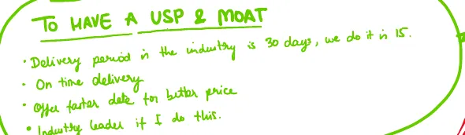
Akshit/Pilots/02
Pilot 02 · Autopilot
House of Cosmos builds homes. The bet is that it can do it without waiting on me for every decision. The name comes off my own whiteboard: autopilot on autopilot.
The bet
HypothesisHouse of Cosmos can run for a month without me making a single day-to-day decision.
Construction runs on one person's phone. Every question ends up with the owner, and the owner becomes the slowest part of the company. I would rather be the person who builds the systems than the person every decision waits for.
— soon
Questions that reach the top of the delegation ladder: they decide, act, and at most let me know.
— soon
Share of work done, and share of it done on time, straight from our weekly reports.
— soon
Every customer gets one. The real test is how many of them actually open it.
Hotel check-ins
No calls, no site visits. A whiteboard, coloured markers and one question: what keeps breaking, and what system would stop it?
Most of the frameworks come from nine months in Rahul Jain's course, which taught me what sites never did: keep the data. We now measure everything on site and off, on time, and our customers can see it on their phones. The check-ins are where it all turns into how House of Cosmos runs. Everything below is running today.
The scans are from the 9 and 10 October 2026 board.
Where the industry's delivery period is 30 days, ours is 15, and the date holds. Faster and on time is what we actually sell.

No job starts until the information, material and labour are 100% ready. Kaam rokne se kaam jaldi hota hai. Holding a job back is what makes it finish sooner.
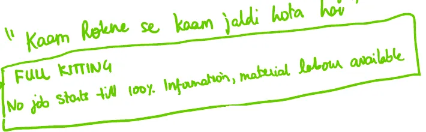
We map the critical path and plan every step at half its usual time. A 16-day step is planned as 8, and 4 days go into one safety buffer the whole project shares.
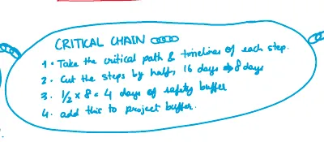
Every business has one thing that makes everything else easier or unnecessary. For us it is on-time delivery.
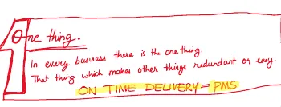
It can't be eaten tomorrow. Delayed data is corrupted data, so nothing on our sites is kept overnight.
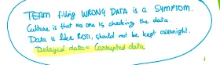
80% of problems are not human errors. When something breaks, we fix the system.
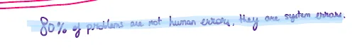
What we measure gets done. Everyone is measured on two things: how much of their work got done, and how much of it got done on time.
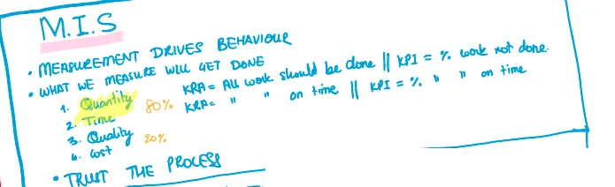
A system should be built for the customer, not for us. So every customer gets a dashboard with their own data on it.
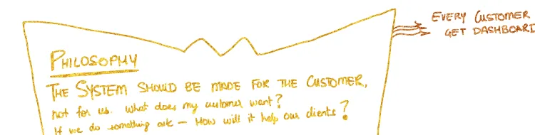
No other meetings. Planning, reports, approvals, every payment and every purchase order happen on Monday. Anything that comes up later waits for the next Monday. Saturdays are only for reviewing the week.
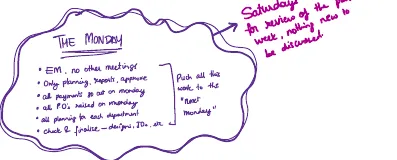
My team does. They spend three hours every week building new ones and reviewing last week's, with four rules: make a list, define the result for the client, never launch a system without results, and keep it to five steps.
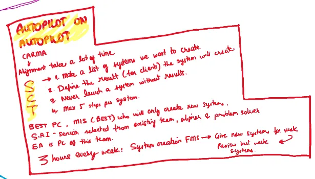
Questions move down four steps. First, they ask and we answer, and nobody grows. Then they bring a recommendation and the reason. Then they decide, act and tell me. Then they just decide and act.
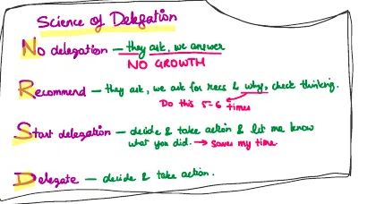
The weekly letter
Every week I write a letter to my family and close friends. What worked in the company that week, and what broke, goes in there.